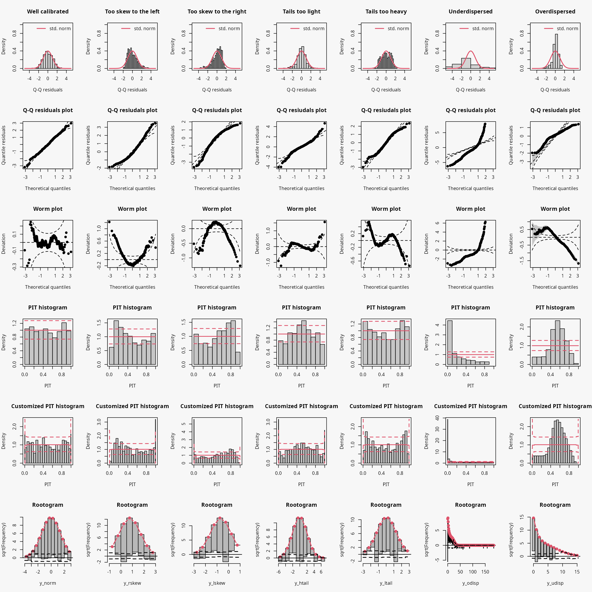
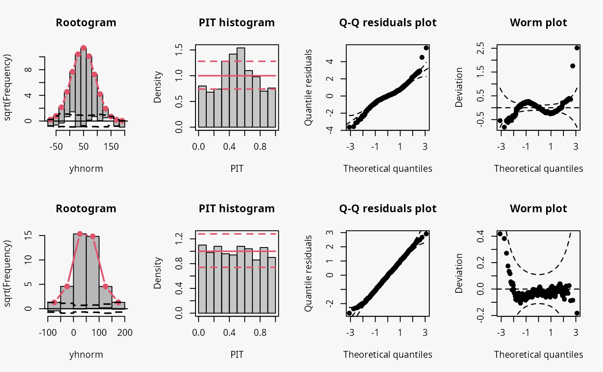
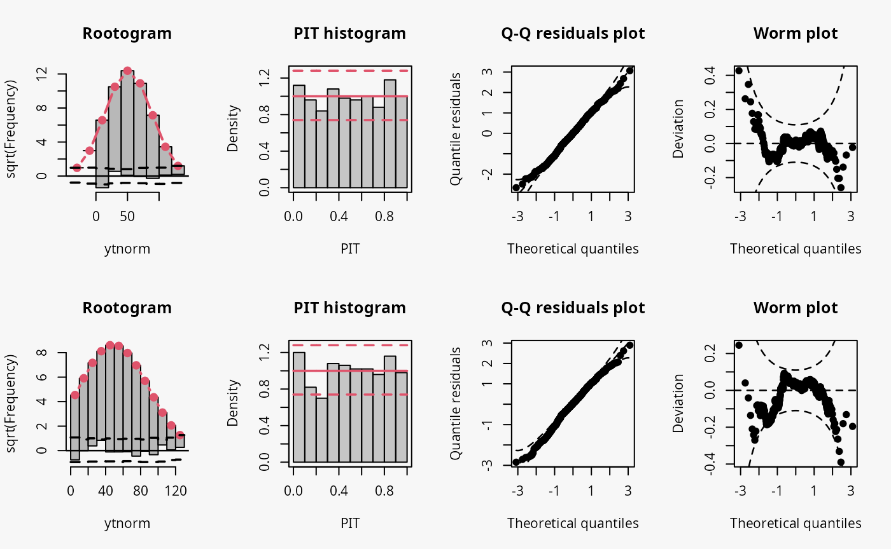
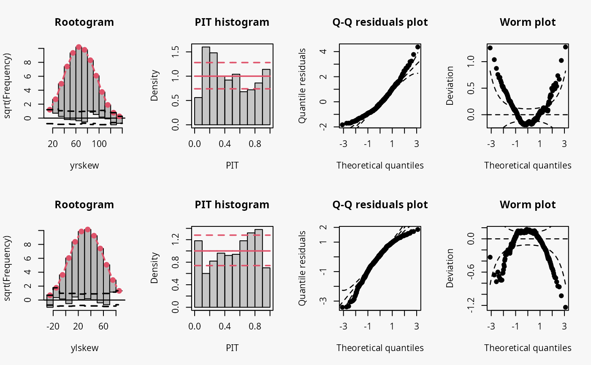
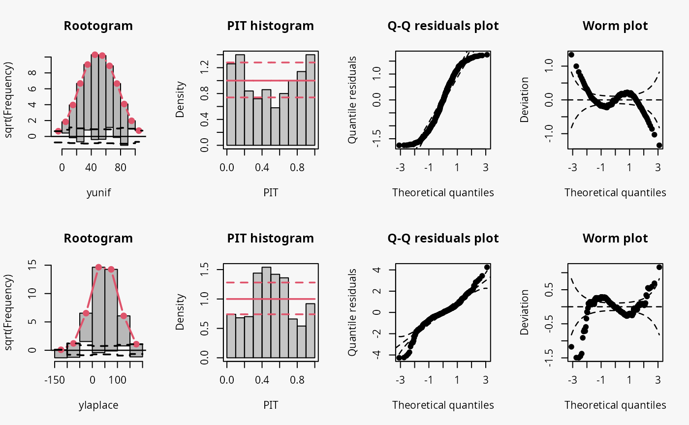

Illustration: Artificial Data
illustration_artificial.RmdSummary

| Predictive distribution | well calibrated | too skew to the left | too skew to the right | tails too light | tails too heavy | underdispersed (underestimated variance) | overdispersed (overestimated variance) |
|---|---|---|---|---|---|---|---|
| Resdiuals | normal | right skewed | left skewed | heavy tailed | light tailed | overdispersed | underdispersed |
| Q-Q plot | bisecting line | positive curvature (bends up the line at both ends) | negative curvature (bends down at both ends) | reverse S-shape (dips below the line at the low end and rises above it at the high end) | S-shape | crossing qqline from below (?) | crossing qqline from above ? |
| Worm plot | horizontal line | U-shape | inverse U-shape | S-shape on the left bent down | S-shape on the left bent up | positive slope | negative slope |
| PIT histogram | uniform | skewed | skewed | superimposed U-shape | superimposed inverse U-shape” | U-shape | inverse U-shape |
| Rootogram | no deviations | ? | ? | wave-like (underfitting in the tails and the center) | ? | ? | ? |
| Interpretation | no misspecifications | ? | ? | values more extrem as expected | values less extrem as expected | ? | ? |
Artifical data
The following artificial data sets are simulated, with response values always depending on regressor variables, in order to obtain a realistic scenario for regression models:
make_residuals_plot <- function(object, breaks = breaks) {
name <- deparse(substitute(object))
set.seed(1)
pithist(object, breaks = c(0, 0.01, 1:9 / 10, 0.99, 1), main = name)
set.seed(1)
hist(qq <- qresiduals(object), freq = FALSE,
main = sprintf("Histogram of qresiduals(%s)", name), xlab = "Q-Q residuals")
curve(dnorm, from = min(qq), to = max(qq), col = 2, add = TRUE)
legend("topright", "std. norm", lty = 1, col = 2, bty = "n")
set.seed(1)
boxplot(data.frame("Q-Q residuals" = qresiduals(object), "std. norm" = rnorm(length(qresiduals(object)))))
}
make_topmodels_plot <- function(object) {
topmodels(object, which = c(1:2, 4:5), ask = FALSE, spar = FALSE)
}
set.seed(0)
## regressors
d <- data.frame(
x = runif(500, -1, 1),
z = runif(500, -1, 1)
)
## parameters
d <- transform(d,
lambda = exp(1 + 0.5 * x),
theta = 2,
mu = 50 + 22 * x,
sigma = 22,
sigmaz = exp(3 + 1 * z)
)
## responses
d <- transform(d,
ynorm = rnorm(500, mean = mu, sd = sigma),
yhnorm = rnorm(500, mean = mu, sd = sigmaz),
ytnorm = crch::rtnorm(500, mean = mu, sd = sigma, left = 0),
ycnorm = crch::rcnorm(500, mean = mu, sd = sigma, left = 0, right = 100),
yt = mu + sigma * rt(500, df = 4),
ylaplace = mu + rmutil::rlaplace(500, s = sigma),
yrskew = sn::rsn(500, xi = mu, omega = sigma, alpha = 5, tau = 0),
ylskew = sn::rsn(500, xi = mu, omega = sigma, alpha = -5, tau = 0),
yunif = mu + sigma * runif(500, min = -1, max = 1),
ypois = rpois(500, lambda = lambda),
ynegbin = rnbinom(500, mu = lambda, size = theta),
yzip = ifelse(runif(500) < 0.25, 0, rpois(500, lambda = lambda))
)Continuous data
Homoscedastic normal
As a reference, a linear normal model is fitted to simulated normally distributed data without conditional heteroscedasticity.
## correct model fit
m1 <- lm(ynorm ~ x, data = d)The model fit experiences no misspecifications resulting in a well calibrated predictive distribution (compare the case “well calibrated” in the summary plot of Graphical Evaluation: Methodology):
- The rootogram shows that the observed and expected frequencies match rather well, without any clear patterns of departure, hence, the deviations between observed and predicted frequences are very small for most values.
- The PIT histogram is uniform, corresponding to a well calibrated predicitve distribution.
- The Q-Q residuals plot shows most points are located along the bisecting line.
- The worm plot is within its confidence intervals and shows only slight deviations from a horizontal line (FIXME: why not completely horizontal).
Conditional heteroscedasticity
In the “conditional heteroscedasticity” example, two models are
fitted to simulated data from the normal distribution where both the
location and scale parameters depend on a regressor. The model
m2 estimated with lm() cannot account for
conditional heteroscedasticity, unlike the model m3 which
is fitted with crch().
## not accounting for heteroscedasticity
m2 <- lm(yhnorm ~ x, data = d)
### accounting for heteroscedasticity
m3 <- crch(yhnorm ~ x | z, data = d)

Not accounting for conditional heteroscedasticity results here in a model fit where the tails of the distribution are too light (compare the case “tails too light” in the summary plot of Graphical Evaluation: Methodology):
- This leads to underfitting the observed values in the tails and the center of the predictive distribution, whereas the values in between are overfitted, which is visible as a typical wave-like pattern in the rootogram. This indicates some overdispersion in the data wich is not accounted for in the model.
- In the PIT histogram, only the underfitting in the middle of the predictive distribution is observed, indicating that more values occur here than expected. A possibly expected U-shaped PIT histogram, typically corresponding to a underdispersive model fit, is not visible here; hence, the PIT histogram is obviously not well suited with the usual number of bins to detect the significant probability mass in the outermost tails of the distribution.
- In the Q-Q residuals plot, due to a transformation to the normal distribution, the tails are more widely spread, whereby the deviations correctly show that the observed values are more extreme than expected. This leads to a so-call reverse S-shape of the Q-Q plot.
- In the wormplot, the misshape is further emphasized by plotting the deviation between the empirical and theoretical quantiles on the Y-axis, which results in a S-shape pattern bending down towards the left.
Censoring (0, 100)
To investigate the graphical evaluation tools under the
misspecification of not accounting for censoring in the estimation,
homoscedastic normally distributed data are simulated with censoring at
0 and 100. The model m4 fitted with lm()
cannot account for the censored data, contrary to the model
m5 estimated with crch().
## not accounting for censoring
m4 <- lm(ycnorm ~ x, data = d)
## accounting for censoring
m5 <- crch(ycnorm ~ x | 1, data = d, left = 0, right = 100)
Not accounting for the censoring at 0 and 100 leads to an incorrect distributional assumption in the tails of the predictive distribution, similar to the case “tails too heavy” discussed in Graphical Evaluation: Methodology:
- In the rootogram, this can be seen by the clear lack of fit for low and high values due to not accounting for the point masses at the censoring points; hence, the values at the censoring points are both underfitted (FIXME: Right censoring in the rootogram, adapt default breaks).
- In contrast to the rootogram, the misspecification is barely visible in the PIT histogram and only weakly visible in the Q-Q residual plot in the form of some deviations at both ends, indicating that the values are a bit less extrem than expected.
- In the worm plot, the drift at both ends towards the upper left corner and the lower right corner, respectively, indicates that the observed values are not as extreme as expected. This is in agreement with the pattern “tails too heavy” discussed in Graphical Evaluation: Methodology, but without the typical S-shape pattern in the worm plot.
Truncation (> 0)
Here, the homoscedastic normally distributed response values are
truncated at zero. The model m6 fitted with
lm() cannot account correctly for this, contrary to the
model m7 estimated with crch().
## not accounting for truncation
m6 <- lm(ytnorm ~ x, data = d)
# not accounting for truncation
m7 <- trch(ytnorm ~ x | 1, data = d, left = 0)

Not accounting for the truncation at 0 leads to an incorrect distributional assumption in the lower tail of the predictive distribution:
- In the rootogram, the lower values within the two first bins are clearly underfitted by the model. Howeverr, for the model correctly accounting for the truncation, some underfitting is also present, indicating a slight misfit of the model (FIXME: Check again if all correct).
- As for the example with censored data, the incorrect model fit due to not accounting for truncation is not visible in the PIT histogram and only weakly visible in the Q-Q residuals plot.
- In the worm plot, there is a weak S-shaped pattern bending upward towards the left, suggesting that the tails of the predictive distribution are too heavy. At least for for the lower tail, this is in line with the misspecification due to truncation. (FIXME: Why is it in the right part?)
Student-t distribution (df = 4)
In the following example, data is simulated from the student-t
distribution with 4 degrees of freedom. The model m8
incorrectly assumes normally distributed data, while the model
m9 correctly incorporates t-distributed data.
## not accounting for t_4 distributed data
m8 <- lm(yt ~ x, data = d)
## accounting for t_4 distributed data
m9 <- crch(yt ~ x | 1, data = d, dist = "student")
Not accounting for the underlying student-t response distribution
(df = 4), which is characterized by heavier tails than the
normal distribution, leads to a model fit where the tails of the
predictive distribution are to light (compare the previous example with
“conditional heteroscedasticity” and the case “tails too light” in the
summary plot of Graphical Evaluation:
Methodology):
- This leads to underfitting the values in the tails and the center of the predictive distribution, whereas the values in between are overfitted, which is visible as a typical wave-like pattern in the rootogram. This indicates some overdispersion in the data wich is not accounted for in the model.
- In the PIT histogram, even if the first bin is slightly higher, mostly the underfitting in the middle of the predictive distribution is observed, indicating that more values occur here than expected. A possibly expected U-shaped PIT histogram, corresponding to a underdispersive model fit, is not detectable, since the heavier tails concern only few values, which are not sufficiently resolved by the usual bin width within the PIT.
- In the Q-Q residuals plot, due to a transformation to the normal distribution, the values in the tails are more widely spread, correctly showing that the observed values are more extreme than expected. This leads to a so-call reverse S-shape of the Q-Q plot.
- In the wormplot, the misshape is further emphasized by plotting the deviation between the empirical and theoretical quantiles on the Y-axis, which results in a S-shape pattern bending down towards the left.
Skewness
In the example “skewness”, both right-skewed and left-skewed data are
simulated, which are not correctly accounted for by the linear models
m10 and m11.
## not accounting for right skewed data
m10 <- lm(yrskew ~ x, data = d)
## not accounting for left skewed data
m11 <- lm(ylskew ~ x, data = d)

Not accounting for right-skewed or left-skewed data leads to a estimated model with a predictive distribution which is too skewed to the left or right, respectively (compare the cases “too skew to the left/right” in the summary plot of Graphical Evaluation: Methodology):
- In the rootogram for the right-skewed and left-skewed data, a clear underfitting of higher and lower values at the ends can be observed, respectively. In other words, the freqeuncies of the observed values are higher than the expected frequencies resulting from estimating a normal distribution without accounting for skewness.
- In the PIT histogram the misspecification is not clearly detectable, but generally a skewed PIT histograms, as seen here, indicates that the central tendencies of the fit must be biased.
- The Q-Q residual plots are positively and negatively curved for right-skewed and left-skewed data, respectively. For right-skewed data, corresponding to a model fit that is too skewed to the left, due to the high frequency of low values in the lower range, the empirical quantile residuals increase more slowly than the standard normal quantiles. However, at the upper end of the distribution, the empirical quantiles increase faster than the standard quantiles. In total, the Q-Q residual plot must be positively curved. For the left-skewed data, corresponding to a model fit that is too skewed to the right, the opposite is true.
- The worm plot shows the typical U-shape or reverse U-shape for the model fits that are too skewed to the left or right, corresponding to right and left skewed response values.
Other misspecified distribution: uniform, laplace
In the following, two further examples are shown, one with simulated data from a uniform distribution, the second with simulated data from a Laplace distribution. For both data sets, a linear model is estimated without considering the true underlying response distribution.
## not accounting for uniform distributed data
m12 <- lm(yunif ~ x, data = d)
## not accounting for laplace distributed data
m13 <- lm(ylaplace ~ x, data = d)

Uniformly distributed data generally have lighter tails than the normal distribution (depending on the lower and upper bounds, of course), while the Laplace distribution here is characterized by heavier tails and a higher probability mass in the center of the distribution than in the normal distribution. Therefore, the uniformly and Laplace distributed data lead to misspecified predictive distributions where the tails are either too heavy or too light, respectively (compare the previous examples “conditional heteroscedasticity” and “Student-t distribution”, where the tails are too light, as well aa the cases “tails too light/heavy” in the summary plot of Graphical Evaluation: Methodology).
Here, uniformly distributed data result in a misspecifed model where the tails of the predictive distribution are too heavy:
- In the rootogram, the overfitting of the values at both ends of the predictive distribution is clearly visible. Here, the observed frequencies are much lower than the expected frequencies, which is consistent with the light tailed distributed data fitted by a linear normal model. The present underfitting of intermediate values in the rootogram likely relates to values drawn from the uniform distribution, where a higher probability mass exists than in the normal distribution.
- In the PIT histogram, the misspecifications at the tails of the underlying distribution are are not visible. In addition, the PIT focuses on the difference between the probability masses of the uniform distribution and the normal distribution located in the middle on both tails. This superimposes a perhaps expected inverted U-shape, which would match the underdispersion in the data corresponding to the overdispersed model fit.
- As before in the Q-Q residuals plot, the transformation of the values to the normal distribution spreads the tails further, correctly showing that the observed values are less extreme than expected. This leads to a pronounced S-shape of the Q-Q plot.
- In the wormplot, the misshape is further emphasized by plotting the deviation between the empirical and theoretical quantiles on the Y-axis, resulting in a distinct S-shape pattern, bending upwards on the left side.
Here, Laplace distributed data result in a misspecifed model where the tails of the predictive distribution are too light:
- The values in the tails and the center of the predictive distribution are underfitted, whereas the values in between are overfitted. This is visible as a typical wave-like pattern in the rootogram.
- In the PIT histogram, even if the last bin is in this example slightly higher, mostly the underfitting in the middle of the predictive distribution is observed, indicating that more values occur here than expected. A possibly expected U-shaped PIT histogram is not detectable, since the heavier tails concern only few values, which are not sufficiently resolved by the usual bin width within the PIT histogram.
- In the Q-Q residuals plot, due to a transformation to the normal distribution, the tails are more widely spread, correctly showing that the observed values are more extreme than expected. This leads to a pronounced reverse S-shape of the Q-Q plot.
- In the wormplot, the misshape is further emphasized by plotting the deviation between the empirical and theoretical quantiles on the Y-axis, which results in a clear S-shape pattern, bending down towards the left.
Count data
Poisson
As a reference, first a Poisson model is fitted to Poisson distributed data.
## correct model fit
m14 <- glm(ypois ~ x, data = d, family = poisson)
The model fit experiences no misspecifications resulting in a well calibrated predictive distribution (compare the case “well calibrated” in the summary plot of Graphical Evaluation: Methodology):
- The rootogram shows that the observed and expected frequencies match rather well, without any clear patterns of departure indicating a rather good fit.
- The PIT histogram is uniform, correspoding to a well calibrated predicitve distribution.
- The Q-Q residuals plot shows most points are located along the bisecting line.
- The worm plot is within its confidence intervals and shows only slight deviations from a horizontal line (FIXME: why not completely horizontal).
Negative binomial
Two models are fitted to simulated data from a negative binomial
distribution. In model m15 an underlying Poisson
distribution is incorrectly assumed, in model m16 the
negative binomial distribution is correctly accounted for by using
glm.nb().
## misspecified distribution leading to an overdispersed predictive distribution
m15 <- glm(ynegbin ~ x, data = d, family = poisson)
## correct distributional assumption
m16 <- MASS::glm.nb(ynegbin ~ x, data = d)
The wrong distribution assumption results in not accounting for the overdispersion in the data, which corresponds to an underdispersed predictive disitriubtion (compare the case “underdispersed” in the summary plot of Graphical Evaluation: Methodology):
- In the rootogram, the wave-like pattern around the horizontal reference line indicates that low and higher values are clearly underfitted, while the values in between are overfitted. This is in agreement with an uderdispersed model, underestimating the underlying variance. The significant lack of fit for 0 could be an additional indication of excess zeros.
- The typical U-shape in the PIT histogram supports that the model is underdispersed: The values attained by the predictive CDF at the observations are located with increased frequency at both ends of the CDF.
- The Q-Q residuals plot shows that many observed values are more extreme than expected, i.e., the data exhibit considerable overdispersion that is not accounted for in the model fit. Probably due to using positive count data, this is more ponounced for positive quantile residuals shown in the upper right part of the Q-Q plot.
- In the worm plot, the positive slope corresponds to the underdispersed predictive distribution.
Zero-inflation
Two models are fitted to simulated count data with excess zeros; the
model m17 is unable to account for zero inflation, while
model m18 fits a zero-inflation regression model that
combines a point mass at zero with a Poisson model for higher counts and
therefore fits the excess zeros perfectly.
## not accouting for zero inflation
m17 <- glm(yzip ~ x, data = d, family = poisson)
## accouting for zero inflation
m18 <- pscl::zeroinfl(yzip ~ x | 1, data = d, dist = "poisson")
Excess zeros are inevitably linked to overdispersion, so the misspecified model fit without accounting for zero inflation has similar patterns to an underdispersive predictive distribution (compare the previous example with “negative binomial” distributed data and “underdispersed” in the summary plot of Graphical Evaluation: Methodology):
- In the rootogram, the wave-like pattern indicates that excess zeros are clearly underfitted, high values are slightly underfitted and values in between are overfitted. The significant lack of fit for 0 corresponds well with the excess zeros.
- The typical U-shape in the PIT histogram supports that the model is underdispersed.
- The Q-Q residuals plot indicates that some observed values are more extreme than expected, i.e., the data exhibit overdispersion that is not accounted for in the model fit.
- In the worm plot, the positive slope corresponds to the underdispersed predictive distribution. The reverse trends at the outer tails of the wormplot are due to (FIXME: why?).